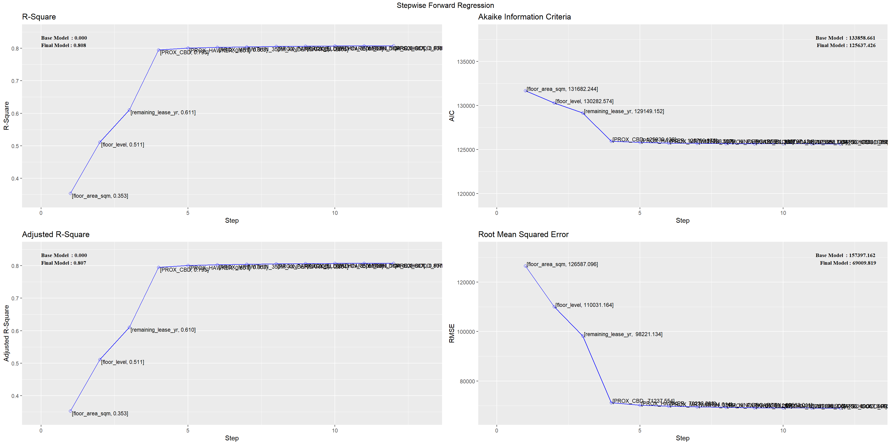
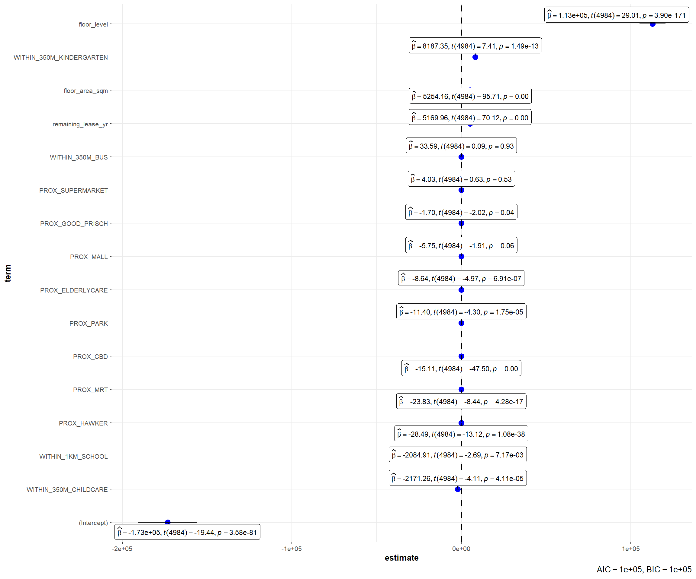
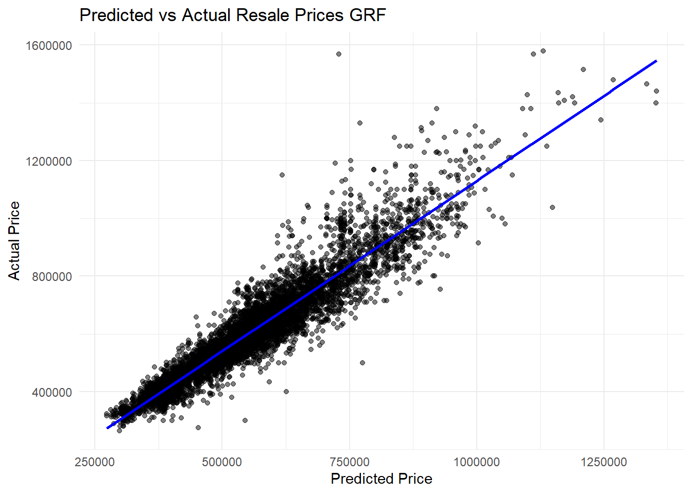

pacman::p_load(sf, spdep, GWmodel, SpatialML,
tmap, rsample, Metrics, tidyverse, ClustGeo,
ggpubr, cluster, factoextra, NbClust, heatmaply, corrplot, psych, GGally, spdep, tmap, sfdep, plotly, Kendall, SpatialAcc, ggstatsplot, reshape2,httr, jsonlite, rvest, olsrr, gtsummary, performance, see, kableExtra, knitr)Take Home Exercise 3b: Predicting HDB Resale Prices with Geographically Weighted Machine Learning Methods
Setting the Scene
Housing is an essential component of household wealth worldwide. Buying a housing has always been a major investment for most people. The price of housing is affected by many factors. Some of them are global in nature such as the general economy of a country or inflation rate. Others can be more specific to the properties themselves. These factors can be further divided to structural and locational factors. Structural factors are variables related to the property themselves such as the size, fitting, and tenure of the property. Locational factors are variables related to the neighbourhood of the properties such as proximity to childcare centre, public transport service and shopping centre.
Conventional, housing resale prices predictive models were built by using Ordinary Least Square (OLS) method. However, this method failed to take into consideration that spatial autocorrelation and spatial heterogeneity exist in geographic data sets such as housing transactions. With the existence of spatial autocorrelation, the OLS estimation of predictive housing resale pricing models could lead to biased, inconsistent, or inefficient results (Anselin 1998). In view of this limitation, Geographical Weighted Models were introduced to better calibrate predictive models for housing resale prices.
The Task
In this take-home exercise, you are required to calibrate a predictive model to predict HDB resale prices between July-September 2024 by using HDB resale transaction records in 2023.
The Data
For the purpose of this take-home exercise, HDB Resale Flat Prices provided by Data.gov.sg should be used as the core data set. The study should focus on either three-room, four-room or five-room flat.
Below is a list of recommended predictors to consider. However, students are free to include other appropriate independent variables.
Structural factors
Area of the unit
Floor level
Remaining lease
Age of the unit
Locational factors
Proxomity to CBD
Proximity to eldercare
Proximity to foodcourt/hawker centres
Proximity to MRT
Proximity to park
Proximity to good primary school
Proximity to shopping mall
Proximity to supermarket
Numbers of kindergartens within 350m
Numbers of childcare centres within 350m
Numbers of bus stop within 350m
Numbers of primary school within 1km
Data Wrangling
Package Descriptions
First, we will load in the following packages:
sf: Provides support for simple features, enabling the handling of spatial data in R. It allows for easy manipulation and analysis of spatial objects.
spdep: Contains functions for spatial dependence and spatial autocorrelation analysis. It is useful for working with spatial data and understanding spatial relationships.
GWmodel: Implements geographically weighted regression (GWR) and other geographically weighted models, allowing for the analysis of spatially varying relationships.
SpatialML: Provides tools for spatial machine learning, including methods for spatial data analysis and modeling.
tmap: A package for thematic mapping in R, allowing for the creation of static and interactive maps.
rsample: Provides functions for creating and working with resampling objects, useful for cross-validation and bootstrapping.
Metrics: Contains functions for evaluating the performance of regression models, including various metrics like RMSE, MAE, and R-squared.
tidyverse: A collection of R packages designed for data science, including tools for data manipulation (dplyr), visualization (ggplot2), and more.
ClustGeo: Provides tools for spatial clustering and geostatistical analysis, including methods for clustering spatial data.
ggpubr: A package that provides easy-to-use functions for creating publication-ready plots with ggplot2, including functions for arranging multiple plots.
cluster: Contains functions for cluster analysis, including various clustering algorithms and methods for evaluating clustering results.
factoextra: A package for visualizing and interpreting the results of multivariate data analyses, including clustering and principal component analysis (PCA).
NbClust: Provides methods for determining the optimal number of clusters in a dataset, offering various indices for cluster validation.
heatmaply: A package for creating interactive heatmaps in R, useful for visualizing complex data matrices.
corrplot: Provides functions for visualizing correlation matrices, making it easy to understand relationships between variables.
psych: Contains functions for psychological research, including tools for descriptive statistics, reliability analysis, and factor analysis.
GGally: Extends ggplot2 by providing functions for creating a variety of plots, including pair plots and correlation plots.
sfdep: A package for spatial dependence analysis, providing tools for exploring and modeling spatial relationships.
plotly: A library for creating interactive plots and dashboards, allowing for dynamic visualizations of data.
Kendall: Implements functions for calculating Kendall’s tau, a measure of correlation between two variables.
SpatialAcc: Provides tools for assessing the accuracy of spatial predictions, including methods for cross-validation and error analysis.
ggstatsplot: A package that integrates statistical tests into ggplot2 visualizations, providing informative plots with statistical results.
reshape2: Provides functions for reshaping data, allowing for easy transformation between wide and long formats.
httr: A package for working with HTTP requests, making it easier to interact with web APIs and retrieve data from the web.
jsonlite: Provides functions for converting between R objects and JSON, making it easy to work with JSON data.
rvest: A package for web scraping, allowing users to extract data from HTML web pages.
olsrr: Provides tools for building and validating ordinary least squares (OLS) regression models, including stepwise regression and model diagnostics.
gtsummary: A package for creating summary tables of statistical models, making it easy to present results in a clear format.
performance: Provides tools for assessing the performance of statistical models, including diagnostics and evaluation metrics.
see: A package for visualizing statistical results, providing functions for creating informative plots and visual summaries.
These packages collectively provide a robust toolkit for spatial analysis, data manipulation, visualization, and statistical modeling in R. Depending on your specific analysis needs, you can leverage these packages to perform a wide range of tasks, from data cleaning and exploration to advanced spatial modeling and visualization.
Set Seed
Using set.seed() is a best practice in data analysis and statistical modeling when randomness is involved. It helps ensure that your results can be reproduced and verified, which is essential for scientific rigor and transparency.
set.seed(1234)More data Wrangling
The next code snippet reads the Singapore subzone dataset, and then transforms the coordinate reference system of that dataset to a new CRS (3414).
mpsz = st_read(dsn = "data/geospatial", layer = "MP14_SUBZONE_WEB_PL")%>%
st_transform(crs = 3414)Reading layer `MP14_SUBZONE_WEB_PL' from data source
`C:\BlumeTechnologies\ISSS626\ISSS626\Take-Home_Exercises\Take-Home_Exercise03\data\geospatial'
using driver `ESRI Shapefile'
Simple feature collection with 323 features and 15 fields
Geometry type: MULTIPOLYGON
Dimension: XY
Bounding box: xmin: 2667.538 ymin: 15748.72 xmax: 56396.44 ymax: 50256.33
Projected CRS: SVY21Read CSV File:
First we read a CSV file containing resale flat prices from January 2017 onwards using read_csv(). The file is located at "data/aspatial/ResaleflatpricesbasedonregistrationdatefromJan-2017onwards.csv".
Filter Data:
Then we filter the dataset to include only records where the month is between January 2023 ("2023-01") and September 2024 ("2024-09").
resale <- read_csv("data/aspatial/ResaleflatpricesbasedonregistrationdatefromJan-2017onwards.csv") %>%
filter(month >= "2023-01" & month <= "2024-09")Data Transformation:
We create a new column address by concatenating the block and street_name columns.
We extract the first two characters from the remaining_lease column to create a new integer column remaining_lease_yr, representing the remaining lease in years.
We extract the characters from positions 9 to 11 of the remaining_lease column to create another integer column remaining_lease_mth, representing the remaining lease in months.
resale_tidy <- resale %>%
mutate(address = paste(block,street_name)) %>%
mutate(remaining_lease_yr = as.integer(
str_sub(remaining_lease, 0, 2)))%>%
mutate(remaining_lease_mth = as.integer(
str_sub(remaining_lease, 9, 11)))Save Tidy Data:
Finally, we save the transformed dataset (resale_tidy) as an RDS file at the specified path "data/rds/resale_tidy.rds" using write_rds().
write_rds(resale_tidy, "data/rds/resale_tidy.rds")Select Resale Data:
We start by creating a new variable resale_selected that holds the data from resale_tidy. This means we are working with a tidy version of the resale flat price data.
resale_selected <- resale_tidyCreate a Unique Address List:
Next, we generate a sorted list of unique addresses from the address column in resale_selected. This list will be used to query the API for geographic coordinates.
add_list <- sort(unique(resale_selected$address))Define a Function to Get Coordinates:
- We define a function called
get_coordsthat takes the list of addresses (add_list) as input. This function will retrieve the postal codes, latitude, and longitude for each address using the OneMap API.
Loop Through Each Address:
Inside the function, we loop through each address in
add_list. For each address:We make a GET request to the OneMap API to search for the address.
We parse the JSON response to check how many results were found.
Handle API Response:
If one result is found, we extract the postal code, latitude, and longitude and create a new row for the results.
If multiple results are found, we filter out any results with “NIL” as the postal code and take the first valid result.
If no results are found, we create a row with
NAvalues for postal code, latitude, and longitude.
Store Results:
Each new row of results is appended to the postal_coords data frame, which accumulates the coordinates for all addresses.
Return Coordinates Data Frame:
After processing all addresses, the function returns the postal_coords data frame containing the addresses along with their corresponding postal codes, latitudes, and longitudes.
get_coords <- function(add_list){
# Create a data frame to store all retrieved coordinates
postal_coords <- data.frame()
for (i in add_list){
#print(i)
r <- GET('https://www.onemap.gov.sg/api/common/elastic/search?',
query=list(searchVal=i,
returnGeom='Y',
getAddrDetails='Y'))
data <- fromJSON(rawToChar(r$content))
found <- data$found
res <- data$results
# Create a new data frame for each address
new_row <- data.frame()
# If single result, append
if (found == 1){
postal <- res$POSTAL
lat <- res$LATITUDE
lng <- res$LONGITUDE
new_row <- data.frame(address= i,
postal = postal,
latitude = lat,
longitude = lng)
}
# If multiple results, drop NIL and append top 1
else if (found > 1){
# Remove those with NIL as postal
res_sub <- res[res$POSTAL != "NIL", ]
# Set as NA first if no Postal
if (nrow(res_sub) == 0) {
new_row <- data.frame(address= i,
postal = NA,
latitude = NA,
longitude = NA)
}
else{
top1 <- head(res_sub, n = 1)
postal <- top1$POSTAL
lat <- top1$LATITUDE
lng <- top1$LONGITUDE
new_row <- data.frame(address= i,
postal = postal,
latitude = lat,
longitude = lng)
}
}
else {
new_row <- data.frame(address= i,
postal = NA,
latitude = NA,
longitude = NA)
}
# Add the row
postal_coords <- rbind(postal_coords, new_row)
}
return(postal_coords)
}Call the Function:
We call the get_coords function with add_list to retrieve the coordinates and store the results in the variable coords.
coords <- get_coords(add_list)Save Coordinates to RDS File:
We save the coords data frame to an RDS file at the specified path "data/rds/coords.rds" for future use.
write_rds(coords, "data/rds/coords.rds")Read Coordinates from RDS File:
We read the saved coordinates from the RDS file back into the variable coords.
coords <- read_rds("data/rds/coords.rds")Read Tidy Resale Data from RDS File:
Finally, we read the tidy resale data from the RDS file back into the variable resale_tidy.
resale_tidy <- read_rds("data/rds/resale_tidy.rds")Join Resale Data with Coordinates:
We start by merging the resale_tidy dataset with the coords dataset using a left join. This combines the resale flat data with the corresponding geographic coordinates (latitude and longitude).
resaleRAW <- left_join(resale_tidy, coords)Joining with `by = join_by(address, postal)`Convert to Spatial Data Frame:
Next, we convert the merged dataset (resaleRAW) into a spatial data frame using st_as_sf(). We specify the columns for longitude and latitude, and set the coordinate reference system (CRS) to WGS 84 (EPSG:4326).
After that, we transform the CRS to a different projection (EPSG:3414) and apply a jitter effect to the spatial points to add a small random variation (0.5 units) to their positions. This is often done to avoid overlapping points in visualizations.
resale <- st_as_sf(resaleRAW,
coords = c("longitude", "latitude"),
crs=4326) %>%
st_transform(crs = 3414)%>%
st_jitter(amount = 0.5)Define a Function to Assign Dummy Variables:
We define a function called
assign_dummythat takes arangeas input and assigns a dummy variable based on predefined ranges of storey levels. The function categorizes the ranges into three groups:1 for “Low” (ranges 01 to 18)
2 for “Medium” (ranges 19 to 36)
3 for “High” (any other range).
Apply the Function to Create a New Column:
We use the sapply() function to apply the assign_dummy function to the storey_range column of the resale dataset. This creates a new column called floor_level that contains the assigned dummy values based on the storey ranges.
assign_dummy <- function(range) {
if (range %in% c("01 TO 03", "04 TO 06", "07 TO 09", "10 TO 12",
"13 TO 15", "16 TO 18")) {
return(1) # Low
} else if (range %in% c("19 TO 21", "22 TO 24", "25 TO 27",
"28 TO 30", "31 TO 33", "34 TO 36")) {
return(2) # Medium
} else {
return(3) # High
}
}
# Apply the function to create a new column in the resale data frame
resale$floor_level <- sapply(resale$storey_range, assign_dummy)Save the Final Resale Data:
We save the final spatial dataset (resale) with the new floor_level column to an RDS file at the specified path "data/rds/resale.rds" for future use.
write_rds(resale, "data/rds/resale.rds")Read the Resale Data from RDS File:
Finally, we read the saved resale data from the RDS file back into the variable resale.
resale <- read_rds("data/rds/resale.rds")Creating Buffer Zones
Create a 350-Meter Buffer:
We use the st_buffer() function from the sf package to create a buffer zone of 350 meters around each spatial point in the resale dataset. This function generates a new spatial object that represents the area within 350 meters of each point.
Create a 1000-Meter Buffer:
Similarly, we create another buffer zone of 1000 meters around each spatial point in the resale dataset using the same st_buffer() function. This generates a new spatial object that represents the area within 1000 meters of each point.
buffer350 = st_buffer(resale, dist = 350)
buffer1000 = st_buffer(resale, dist = 1000)Loading in location predictor variables
In this section we load in the location predictor variables aswell as calculating and finding distances
We use the st_distance() function from the sf package to compute the distances between each point in the resale dataset and the points in the CBD dataset. This function returns a distance matrix where each entry represents the distance between a point in resale and a point in the predictor value.
We apply the apply() function to the distance matrix to find the minimum distance for each point in the resale dataset. The 1 argument indicates that we are applying the function across rows (i.e., for each point in resale). The result is a vector of minimum distances.
The st_intersects() function from the sf package is used to determine which which locations fall within the 350 or 1000-meter buffer zones created earlier (stored in buffer350/1000). This function returns a list where each element corresponds to a buffer zone and contains the indices of locations that intersect with that zone.
The lengths() function is then applied to the list of intersections obtained from st_intersects(). This function counts the number of locations that intersect with each buffer zone. The result is a vector where each element represents the count of locations within the corresponding buffer zone.
CBD <- data.frame(
longitude = c(103.8503), # Example longitudes
latitude = c(1.2812) # Example latitudes
)
CBD <- st_as_sf(CBD,
coords = c("longitude", "latitude"),
crs=4326) %>%
st_transform(crs = 3414)distances = st_distance(resale, CBD)
min_distances <- apply(distances, 1, min)
resale$PROX_CBD = min_distanceseldercare <- st_read(dsn = "data/geospatial", layer = "ELDERCARE") %>%
st_transform(crs = 3414)
distances = st_distance(resale, eldercare)
min_distances <- apply(distances, 1, min)
resale$PROX_ELDERLYCARE = min_distanceshawker <- st_read("data/geospatial/HawkerCentresGEOJSON.geojson") %>%
st_transform(crs = 3414)
distances = st_distance(resale, hawker)
min_distances <- apply(distances, 1, min)
resale$PROX_HAWKER = min_distancesmrt <- read_csv("data/aspatial/MRT.csv")mrt <- st_as_sf(mrt,
coords = c("Longitude", "Latitude"),
crs=4326) %>%
st_transform(crs = 3414)distances = st_distance(resale, mrt)
min_distances <- apply(distances, 1, min)
resale$PROX_MRT = min_distancespark <- st_read("data/geospatial/Parks.geojson") %>%
st_transform(crs = 3414)
distances = st_distance(resale, park)
min_distances <- apply(distances, 1, min)
resale$PROX_PARK = min_distancesmalls <- read_csv("data/aspatial/shopping_mall_coordinates.csv")malls <- st_as_sf(malls,
coords = c("LONGITUDE", "LATITUDE"),
crs=4326) %>%
st_transform(crs = 3414)
distances = st_distance(resale, malls)
min_distances <- apply(distances, 1, min)
resale$PROX_MALL = min_distancessupermarket <- st_read("data/geospatial/SupermarketsGEOJSON.geojson") %>%
st_transform(crs = 3414)
distances = st_distance(resale, supermarket)
min_distances <- apply(distances, 1, min)
resale$PROX_SUPERMARKET = min_distanceskindergarten <- st_read("data/geospatial/Kindergartens.geojson") %>%
st_transform(crs = 3414)
resale$WITHIN_350M_KINDERGARTEN = lengths(
st_intersects(buffer350, kindergarten)
)childcare <- st_read("data/geospatial/ChildCareServices.geojson") %>%
st_transform(crs = 3414)
resale$WITHIN_350M_CHILDCARE = lengths(
st_intersects(buffer350, childcare)
)busstop <- st_read(dsn = "data/geospatial", layer = "BusStop") %>%
st_transform(crs = 3414)
resale$WITHIN_350M_BUS = lengths(
st_intersects(buffer350, busstop)
)schools <- read_csv("data/aspatial/Generalinformationofschools.csv") %>%
filter(mainlevel_code == "PRIMARY")add_list1 <- sort(unique(schools$address))get_coords1 <- function(add_list1){
# Create a data frame to store all retrieved coordinates
postal_coords1 <- data.frame()
for (i in add_list1){
#print(i)
r <- GET('https://www.onemap.gov.sg/api/common/elastic/search?',
query=list(searchVal=i,
returnGeom='Y',
getAddrDetails='Y'))
data <- fromJSON(rawToChar(r$content))
found <- data$found
res <- data$results
# Create a new data frame for each address
new_row <- data.frame()
# If single result, append
if (found == 1){
postal <- res$POSTAL
lat <- res$LATITUDE
lng <- res$LONGITUDE
new_row <- data.frame(address= i,
postal = postal,
latitude = lat,
longitude = lng)
}
# If multiple results, drop NIL and append top 1
else if (found > 1){
# Remove those with NIL as postal
res_sub <- res[res$POSTAL != "NIL", ]
# Set as NA first if no Postal
if (nrow(res_sub) == 0) {
new_row <- data.frame(address= i,
postal = NA,
latitude = NA,
longitude = NA)
}
else{
top1 <- head(res_sub, n = 1)
postal <- top1$POSTAL
lat <- top1$LATITUDE
lng <- top1$LONGITUDE
new_row <- data.frame(address= i,
postal = postal,
latitude = lat,
longitude = lng)
}
}
else {
new_row <- data.frame(address= i,
postal = NA,
latitude = NA,
longitude = NA)
}
# Add the row
postal_coords1 <- rbind(postal_coords1, new_row)
}
return(postal_coords1)
}coordsschool <- get_coords(add_list1)write_rds(coordsschool, "data/rds/coordsschool.rds")coordsschool <- read_rds("data/rds/coordsschool.rds")schools <- left_join(schools, coordsschool)schools <- st_as_sf(schools,
coords = c("longitude", "latitude"),
crs=4326) %>%
st_transform(crs = 3414)resale$WITHIN_1KM_SCHOOL = lengths(
st_intersects(buffer1000, schools)
)goodschools = c("AI TONG SCHOOL", "ANGLO-CHINESE SCHOOL (JUNIOR)", "ANGLO-CHINESE SCHOOL (PRIMARY)","CATHOLIC HIGH SCHOOL (PRIMARY SECTION)", "CHIJ ST. NICHOLAS GIRLS’ SCHOOL (PRIMARY SECTION)", "CHONGFU SCHOOL",
"FAIRFIELD METHODIST SCHOOL (PRIMARY)", "GONGSHANG PRIMARY SCHOOL",
"HENRY PARK PRIMARY SCHOOL", "HOLY INNOCENTS' PRIMARY SCHOOL",
"HORIZON PRIMARY SCHOOL", "METHODIST GIRLS' SCHOOL (PRIMARY)","NAN HUA PRIMARY SCHOOL", "NANYANG PRIMARY SCHOOL",
"NORTHLAND PRIMARY SCHOOL", "PEI CHUN PUBLIC SCHOOL",
"PEI HWA PRESBYTERIAN PRIMARY SCHOOL", "RED SWASTIKA SCHOOL",
"ROSYTH SCHOOL", "RULANG PRIMARY SCHOOL", "SOUTH VIEW PRIMARY SCHOOL", "ST. HILDA'S PRIMARY SCHOOL", "ST. JOSEPH'S INSTITUTION JUNIOR", "TAO NAN SCHOOL", "TEMASEK PRIMARY SCHOOL")
good_schools = schools %>%
filter(school_name %in% goodschools)
distances = st_distance(resale, good_schools)
min_distances <- apply(distances, 1, min)
resale$PROX_GOOD_PRISCH = min_distancesTidying up dataset
In this section, we are tidying the resale dataset by selecting specific columns of interest from the original resale dataset. The select() function from the dplyr package allows us to choose only the relevant variables that we want to keep for our analysis. The selected columns include:
resale_price: The price at which the property was resold.
floor_area_sqm: The area of the property in square meters.
floor_level: The level of the floor on which the property is located.
remaining_lease_yr: The number of years remaining on the lease.
PROX_CBD: Proximity to the Central Business District.
PROX_ELDERLYCARE: Proximity to elderly care facilities.
PROX_HAWKER: Proximity to hawker centers.
PROX_MRT: Proximity to Mass Rapid Transit stations.
PROX_PARK: Proximity to parks.
PROX_GOOD_PRISCH: Proximity to good primary schools.
PROX_MALL: Proximity to shopping malls.
PROX_SUPERMARKET: Proximity to supermarkets.
WITHIN_350M_KINDERGARTEN: Indicator for being within 350 meters of a kindergarten.
WITHIN_350M_CHILDCARE: Indicator for being within 350 meters of childcare facilities.
WITHIN_350M_BUS: Indicator for being within 350 meters of a bus stop.
WITHIN_1KM_SCHOOL: Indicator for being within 1 kilometer of a school.
month: The month of the transaction.
flat_type: The type of flat (e.g., HDB, private).
flat_model: The model of the flat.
storey_range: The range of storeys for the flat.
lease_commence_date: The date when the lease commenced.
remaining_lease_mth: The number of months remaining on the lease.
address: The address of the property.
remaining_lease: The remaining lease period.
postal: The postal code.
geometry: The spatial geometry of the property.
By selecting these columns, we ensure that our dataset is focused on the variables that are relevant for our analysis, particularly for modeling resale prices.
resale_tidy = resale %>%
select(resale_price, floor_area_sqm, floor_level, remaining_lease_yr,PROX_CBD, PROX_ELDERLYCARE, PROX_HAWKER, PROX_MRT, PROX_PARK, PROX_GOOD_PRISCH, PROX_MALL, PROX_SUPERMARKET, WITHIN_350M_KINDERGARTEN, WITHIN_350M_CHILDCARE, WITHIN_350M_BUS, WITHIN_1KM_SCHOOL,month, flat_type,flat_model, storey_range, lease_commence_date, remaining_lease_mth, address, remaining_lease, ,postal, geometry)In this line, we save the tidied dataset (resale_tidy) to an RDS file using the write_rds() function. This allows us to store the cleaned and selected data for future use without needing to repeat the tidying process. The eval: false comment indicates that this code should not be executed in the current context, possibly to avoid overwriting existing files.
write_rds(resale_tidy, "data/rds/resale_tidy.rds")Here, we load the previously saved tidied dataset from the RDS file back into our R environment using the read_rds() function. This allows us to access the cleaned data for further analysis or modeling.
resale_tidy <- read_rds("data/rds/resale_tidy.rds")In this final step, we generate a summary of the resale_tidy dataset using the summary() function.
summary(resale_tidy) resale_price floor_area_sqm floor_level remaining_lease_yr
Min. : 150000 Min. : 31.00 Min. :1.00 Min. :41.0
1st Qu.: 460000 1st Qu.: 74.00 1st Qu.:1.00 1st Qu.:60.0
Median : 565000 Median : 93.00 Median :1.00 Median :73.0
Mean : 587542 Mean : 95.22 Mean :1.06 Mean :73.3
3rd Qu.: 685000 3rd Qu.:111.00 3rd Qu.:1.00 3rd Qu.:90.0
Max. :1588000 Max. :366.70 Max. :3.00 Max. :97.0
PROX_CBD PROX_ELDERLYCARE PROX_HAWKER PROX_MRT
Min. : 582.9 Min. : 0.027 Min. : 6.719 Min. : 21.71
1st Qu.:10088.2 1st Qu.: 330.194 1st Qu.: 357.323 1st Qu.: 338.70
Median :13793.4 Median : 630.634 Median : 637.947 Median : 559.70
Mean :12788.1 Mean : 798.225 Mean : 752.096 Mean : 632.29
3rd Qu.:15608.0 3rd Qu.:1092.804 3rd Qu.:1002.451 3rd Qu.: 831.20
Max. :20167.8 Max. :4767.706 Max. :2868.089 Max. :3491.85
PROX_PARK PROX_GOOD_PRISCH PROX_MALL PROX_SUPERMARKET
Min. : 46.1 Min. : 49.52 Min. : 0.17 Min. : 0.042
1st Qu.: 456.1 1st Qu.: 919.27 1st Qu.: 391.83 1st Qu.: 176.204
Median : 671.7 Median :1663.19 Median : 612.04 Median : 273.681
Mean : 772.5 Mean :1911.82 Mean : 680.68 Mean : 294.183
3rd Qu.: 982.5 3rd Qu.:2539.93 3rd Qu.: 909.26 3rd Qu.: 385.881
Max. :2412.0 Max. :7564.48 Max. :3203.02 Max. :3325.498
WITHIN_350M_KINDERGARTEN WITHIN_350M_CHILDCARE WITHIN_350M_BUS
Min. :0.0000 Min. : 0.00 Min. : 0.000
1st Qu.:0.0000 1st Qu.: 3.00 1st Qu.: 6.000
Median :1.0000 Median : 4.00 Median : 8.000
Mean :0.9786 Mean : 4.63 Mean : 7.912
3rd Qu.:1.0000 3rd Qu.: 6.00 3rd Qu.:10.000
Max. :8.0000 Max. :22.00 Max. :19.000
WITHIN_1KM_SCHOOL month flat_type flat_model
Min. :0.000 Length:47428 Length:47428 Length:47428
1st Qu.:2.000 Class :character Class :character Class :character
Median :3.000 Mode :character Mode :character Mode :character
Mean :2.976
3rd Qu.:4.000
Max. :9.000
storey_range lease_commence_date remaining_lease_mth address
Length:47428 Min. :1966 Min. : 1.000 Length:47428
Class :character 1st Qu.:1985 1st Qu.: 3.000 Class :character
Mode :character Median :1998 Median : 6.000 Mode :character
Mean :1998 Mean : 6.077
3rd Qu.:2015 3rd Qu.: 9.000
Max. :2022 Max. :11.000
NA's :3951
remaining_lease postal geometry
Length:47428 Length:47428 POINT :47428
Class :character Class :character epsg:3414 : 0
Mode :character Mode :character +proj=tmer...: 0
Exploratory Data Analysis (EDA)
EDA using Statistical Graphics
ggplot(data=resale_tidy, aes(x=`resale_price`)) +
geom_histogram(bins=20, color="black", fill="light blue")The figure above reveals a slight right skewed distribution. ## Multiple Histogram Plots Distribution of Variables
floor_area_sqm <- ggplot(data=resale_tidy, aes(x= `floor_area_sqm`)) +
geom_histogram(bins=20, color="black", fill="light blue")
floor_level <- ggplot(data=resale_tidy, aes(x= `floor_level`)) +
geom_histogram(bins=3, color="black", fill="light blue")
remaining_lease_yr <- ggplot(data=resale_tidy, aes(x= `remaining_lease_yr`)) +
geom_histogram(bins=20, color="black", fill="light blue")
PROX_CBD <- ggplot(data=resale_tidy, aes(x= `PROX_CBD`)) +
geom_histogram(bins=20, color="black", fill="light blue")
PROX_ELDERLYCARE <- ggplot(data=resale_tidy, aes(x= `PROX_ELDERLYCARE`)) +
geom_histogram(bins=20, color="black", fill="light blue")
PROX_HAWKER <- ggplot(data=resale_tidy, aes(x= `PROX_HAWKER`)) +
geom_histogram(bins=20, color="black", fill="light blue")
PROX_MRT <- ggplot(data=resale_tidy, aes(x= `PROX_MRT`)) +
geom_histogram(bins=20, color="black", fill="light blue")
PROX_PARK <- ggplot(data=resale_tidy, aes(x= `PROX_PARK`)) +
geom_histogram(bins=20, color="black", fill="light blue")
PROX_GOOD_PRISCH <- ggplot(data=resale_tidy, aes(x= `PROX_GOOD_PRISCH`)) +
geom_histogram(bins=20, color="black", fill="light blue")
PROX_MALL <- ggplot(data=resale_tidy, aes(x= `PROX_MALL`)) +
geom_histogram(bins=20, color="black", fill="light blue")
PROX_SUPERMARKET <- ggplot(data=resale_tidy, aes(x= `PROX_SUPERMARKET`)) +
geom_histogram(bins=20, color="black", fill="light blue")
WITHIN_350M_KINDERGARTEN <- ggplot(data=resale_tidy, aes(x= `WITHIN_350M_KINDERGARTEN`)) +
geom_histogram(bins=20, color="black", fill="light blue")
WITHIN_350M_CHILDCARE <- ggplot(data=resale_tidy, aes(x= `WITHIN_350M_CHILDCARE`)) +
geom_histogram(bins=20, color="black", fill="light blue")
WITHIN_350M_BUS <- ggplot(data=resale_tidy, aes(x= `WITHIN_350M_BUS`)) +
geom_histogram(bins=20, color="black", fill="light blue")
WITHIN_1KM_SCHOOL <- ggplot(data=resale_tidy, aes(x= `WITHIN_1KM_SCHOOL`)) +
geom_histogram(bins=20, color="black", fill="light blue")
ggarrange(floor_area_sqm,floor_level,remaining_lease_yr,PROX_CBD,PROX_ELDERLYCARE,PROX_HAWKER,PROX_MRT,PROX_PARK,PROX_GOOD_PRISCH,PROX_MALL,PROX_SUPERMARKET,WITHIN_350M_KINDERGARTEN,WITHIN_350M_CHILDCARE,WITHIN_350M_BUS,WITHIN_1KM_SCHOOL,ncol = 3, nrow = 4)$`1`
$`2`
attr(,"class")
[1] "list" "ggarrange"Data Sampling
Creating subsets
Filter for Data from the Year 2023:
- The first part of the code uses the
dplyrpackage to filter theresale_tidydataset for records from the year 2023. Thefilter()function is used in conjunction withgrepl()to match any month that starts with “2023-”, and it also filters for specific flat types: “3 ROOM”, “4 ROOM”, and “5 ROOM”.
Filter for Data Between July and September 2024:
- The second part of the code creates another subset of the
resale_tidydataset, this time filtering for records between July and September of 2024. It uses thefilter()function to select rows where themonthis either “2024-07”, “2024-08”, or “2024-09”, and again filters for the same flat types: “3 ROOM”, “4 ROOM”, and “5 ROOM”.
# Filter for data from the year 2023
subset_2023 <- resale_tidy %>%
filter(grepl("^2023-", month) & flat_type %in% c("3 ROOM", "4 ROOM", "5 ROOM"))
# Filter for data between July and September 2024
subset_jul_sep_2024 <- resale_tidy %>%
filter(month %in% c("2024-07", "2024-08", "2024-09") & flat_type %in% c("3 ROOM", "4 ROOM", "5 ROOM"))Save the Subset to an RDS File:
- The
write_rds()function from thereadrpackage is used to save thesubset_jul_sep_2024dataset to a file in RDS format. The file is saved in the “data/rds/” directory with the name “test_data.rds”.
write_rds(subset_jul_sep_2024, "data/rds/test_data.rds")Read the RDS File Back into R:
- Finally, the
read_rds()function is used to read the saved RDS file back into R, creating a new object calledtest_data. This allows you to access the filtered dataset after it has been saved.
test_data <- read_rds("data/rds/test_data.rds")Creating training data
Due to processing limitations we will need to reduce the number of observations in our training dataset.
Check Original Size of the Dataset:
- First, we calculate the number of rows (observations) in the
subset_2023dataset using thenrow()function. We store this value in the variableoriginal_size, which helps us understand the size of the dataset before we proceed with sampling.
original_size <- nrow(subset_2023)
original_sizeDefine Sample Size:
- Next, we define a variable called
sample_sizeand set it to 5000. This variable indicates the number of observations we want to randomly select from thesubset_2023dataset to create our training dataset.
sample_size <- 5000Random Sampling:
- We then use the
sample_n()function from thedplyrpackage to randomly select 5000 observations from thesubset_2023dataset. To ensure that our random selection is reproducible, we callset.seed(1234)before sampling. We also specifyreplace = FALSEto indicate that we do not want to select the same observation more than once.
set.seed(1234)
train_data <- subset_2023 %>%
sample_n(size = sample_size, replace = FALSE)Save the Training Data to an RDS File:
- After creating our training dataset, we use the
write_rds()function from thereadrpackage to save thetrain_datadataset to a file in RDS format. We save this file in the “data/rds/” directory with the name “train_data.rds”.
write_rds(train_data, "data/rds/train_data.rds")Read the RDS File Back into R:
- Finally, we read the saved RDS file back into R using the
read_rds()function, creating a new object calledtrain_data. This allows us to access the randomly sampled training dataset after it has been saved.
train_data <- read_rds("data/rds/train_data.rds")Computing Correlation Matrix
Before loading the predictors into a predictive model, it is always a good practice to use correlation matrix to examine if there is sign of multicolinearity.
nogeo_2023 <- train_data %>%
st_drop_geometry()
corrplot::corrplot(cor(nogeo_2023[, 1:16]),
diag = FALSE,
order = "AOE",
tl.pos = "td",
tl.cex = 0.5,
method = "number",
type = "upper")
data_nogeo <- train_data %>%
st_drop_geometry()
ggstatsplot::ggcorrmat(data_nogeo[, 2:17])The correlation matrix above shows that all the correlation values are below 0.8. Hence, there is no sign of multicolinearity.
Building a Pricing Model by using Multiple Linear Regression Method
Building a non-spatial multiple linear regression
The code chunk below using lm() to calibrate the multiple linear regression model.
In this section, we fit a Multiple Linear Regression (MLR) model to predict the resale_price based on various predictors, including floor_area_sqm, floor_level, and proximity to various amenities. We use the lm() function to create the model and then call summary(resale_mlr) to display the model’s summary statistics, which helps us understand the model’s performance and the significance of the predictors.
resale_mlr <- lm(formula = resale_price ~ floor_area_sqm + floor_level + remaining_lease_yr + PROX_CBD + PROX_ELDERLYCARE + PROX_HAWKER +PROX_MRT + PROX_PARK + PROX_GOOD_PRISCH + PROX_MALL + PROX_SUPERMARKET + WITHIN_350M_KINDERGARTEN + WITHIN_350M_CHILDCARE + WITHIN_350M_BUS + WITHIN_1KM_SCHOOL,
data=train_data)
summary(resale_mlr)Here, we save the fitted MLR model to a file in RDS format using the write_rds() function. This allows us to easily load the model later without needing to refit it.
write_rds(resale_mlr, "data/rds/resale_mlr.rds" ) In this step, we load the previously saved MLR model from the RDS file using the read_rds() function. This enables us to use the model for making predictions without having to refit it.
resale_mlr <- read_rds("data/rds/resale_mlr.rds")We use the fitted MLR model to make predictions on a new dataset, test_data, by calling the predict() function. This generates predicted resale prices based on the features in the test dataset.
We calculate the Root Mean Square Error (RMSE) to assess the model’s prediction accuracy. We first extract the actual resale prices from the test data, then compute the RMSE by taking the square root of the average of the squared differences between the predicted and actual values. Finally, we print the RMSE value.
# Make predictions on the test data
predictions_mlr <- predict(resale_mlr, newdata=test_data)
# Calculate RMSE
actuals_mlr <- test_data$resale_price
rmse_mlr <- sqrt(mean((predictions_mlr - actuals_mlr)^2))
# Print RMSE
print(paste("Root Mean Square Error:", rmse_mlr))[1] "Root Mean Square Error: 93308.4371374501"# Get the summary of the model
summary_mlr <- summary(resale_mlr)
# Extract R-squared
r_squared_mlr <- summary_mlr$r.squared
# Print R-squared
print(paste("R-squared for MLR:", r_squared_mlr))[1] "R-squared for MLR: 0.807920494134166"combined_df_mlr <- data.frame(predictions_mlr,
actuals_mlr)We obtain the summary of the fitted MLR model again to extract the R-squared value, which indicates the proportion of variance in the resale prices explained by the model. We then print this value.And we create a new data frame that combines the predicted resale prices and the actual resale prices. This can be useful for further analysis or visualization.
Model Assessment: olsrr method
Generating tidy linear regression report
We use the olsrr package to generate a tidy report of the linear regression results, which provides a comprehensive overview of the model’s performance and statistics.
olsrr::ols_regress(resale_mlr) Model Summary
--------------------------------------------------------------------------
R 0.899 RMSE 68982.259
R-Squared 0.808 MSE 4773828300.418
Adj. R-Squared 0.807 Coef. Var 12.344
Pred R-Squared 0.806 AIC 125639.432
MAE 51860.197 SBC 125750.224
--------------------------------------------------------------------------
RMSE: Root Mean Square Error
MSE: Mean Square Error
MAE: Mean Absolute Error
AIC: Akaike Information Criteria
SBC: Schwarz Bayesian Criteria
ANOVA
-------------------------------------------------------------------------------
Sum of
Squares DF Mean Square F Sig.
-------------------------------------------------------------------------------
Regression 1.000766e+14 15 6.671772e+12 1397.573 0.0000
Residual 2.379276e+13 4984 4773828300.418
Total 1.238693e+14 4999
-------------------------------------------------------------------------------
Parameter Estimates
---------------------------------------------------------------------------------------------------------------------
model Beta Std. Error Std. Beta t Sig lower upper
---------------------------------------------------------------------------------------------------------------------
(Intercept) -173309.721 8916.656 -19.437 0.000 -190790.291 -155829.152
floor_area_sqm 5254.162 54.899 0.631 95.706 0.000 5146.536 5361.788
floor_level 112895.436 3891.341 0.194 29.012 0.000 105266.695 120524.177
remaining_lease_yr 5169.963 73.728 0.500 70.122 0.000 5025.423 5314.503
PROX_CBD -15.110 0.318 -0.417 -47.504 0.000 -15.734 -14.487
PROX_ELDERLYCARE -8.643 1.739 -0.034 -4.970 0.000 -12.053 -5.234
PROX_HAWKER -28.488 2.171 -0.094 -13.122 0.000 -32.744 -24.231
PROX_MRT -23.829 2.825 -0.058 -8.435 0.000 -29.367 -18.291
PROX_PARK -11.405 2.653 -0.031 -4.299 0.000 -16.606 -6.204
PROX_GOOD_PRISCH -1.705 0.843 -0.014 -2.022 0.043 -3.358 -0.052
PROX_MALL -5.746 3.010 -0.014 -1.909 0.056 -11.646 0.155
PROX_SUPERMARKET 4.027 6.404 0.004 0.629 0.530 -8.529 16.582
WITHIN_350M_KINDERGARTEN 8187.352 1105.089 0.053 7.409 0.000 6020.892 10353.813
WITHIN_350M_CHILDCARE -2171.257 528.929 -0.031 -4.105 0.000 -3208.190 -1134.323
WITHIN_350M_BUS 33.593 364.145 0.001 0.092 0.927 -680.291 747.477
WITHIN_1KM_SCHOOL -2084.913 775.082 -0.020 -2.690 0.007 -3604.414 -565.411
---------------------------------------------------------------------------------------------------------------------Multicolinarity
We assess multicollinearity among the predictors using the Variance Inflation Factor (VIF). High VIF values indicate multicollinearity, which can affect the stability of the regression coefficients. We display the VIF results in a table and create a plot to visualize the VIF values.
ols_vif_tol(resale_mlr) Variables Tolerance VIF
1 floor_area_sqm 0.8876293 1.126596
2 floor_level 0.8646552 1.156530
3 remaining_lease_yr 0.7590403 1.317453
4 PROX_CBD 0.4997118 2.001154
5 PROX_ELDERLYCARE 0.8091410 1.235879
6 PROX_HAWKER 0.7461858 1.340149
7 PROX_MRT 0.8229885 1.215084
8 PROX_PARK 0.7200841 1.388727
9 PROX_GOOD_PRISCH 0.7685066 1.301225
10 PROX_MALL 0.7558033 1.323096
11 PROX_SUPERMARKET 0.8592631 1.163788
12 WITHIN_350M_KINDERGARTEN 0.7568912 1.321194
13 WITHIN_350M_CHILDCARE 0.6601779 1.514743
14 WITHIN_350M_BUS 0.8621027 1.159955
15 WITHIN_1KM_SCHOOL 0.6742910 1.483039vif <- performance::check_collinearity(resale_mlr)
kable(vif,
caption = "Variance Inflation Factor (VIF) Results") %>%
kable_styling(font_size = 18) | Term | VIF | VIF_CI_low | VIF_CI_high | SE_factor | Tolerance | Tolerance_CI_low | Tolerance_CI_high |
|---|---|---|---|---|---|---|---|
| floor_area_sqm | 1.126597 | 1.096316 | 1.166397 | 1.061413 | 0.8876293 | 0.8573413 | 0.9121457 |
| floor_level | 1.156530 | 1.124163 | 1.197335 | 1.075421 | 0.8646552 | 0.8351880 | 0.8895507 |
| remaining_lease_yr | 1.317453 | 1.275368 | 1.365970 | 1.147804 | 0.7590403 | 0.7320803 | 0.7840874 |
| PROX_CBD | 2.001154 | 1.921584 | 2.087594 | 1.414621 | 0.4997118 | 0.4790204 | 0.5204041 |
| PROX_ELDERLYCARE | 1.235879 | 1.198544 | 1.280234 | 1.111701 | 0.8091410 | 0.7811074 | 0.8343457 |
| PROX_HAWKER | 1.340149 | 1.296772 | 1.389865 | 1.157648 | 0.7461858 | 0.7194943 | 0.7711454 |
| PROX_MRT | 1.215084 | 1.179003 | 1.258437 | 1.102308 | 0.8229885 | 0.7946363 | 0.8481743 |
| PROX_PARK | 1.388727 | 1.342614 | 1.441046 | 1.178442 | 0.7200841 | 0.6939405 | 0.7448158 |
| PROX_GOOD_PRISCH | 1.301225 | 1.260069 | 1.348893 | 1.140713 | 0.7685066 | 0.7413485 | 0.7936071 |
| PROX_MALL | 1.323095 | 1.280688 | 1.371910 | 1.150259 | 0.7558033 | 0.7289110 | 0.7808301 |
| PROX_SUPERMARKET | 1.163788 | 1.130939 | 1.204877 | 1.078790 | 0.8592631 | 0.8299604 | 0.8842206 |
| WITHIN_350M_KINDERGARTEN | 1.321194 | 1.278895 | 1.369908 | 1.149432 | 0.7568912 | 0.7299761 | 0.7819249 |
| WITHIN_350M_CHILDCARE | 1.514743 | 1.461641 | 1.573954 | 1.230749 | 0.6601779 | 0.6353427 | 0.6841624 |
| WITHIN_350M_BUS | 1.159955 | 1.127359 | 1.200892 | 1.077012 | 0.8621027 | 0.8327143 | 0.8870286 |
| WITHIN_1KM_SCHOOL | 1.483039 | 1.431685 | 1.540503 | 1.217801 | 0.6742910 | 0.6491388 | 0.6984776 |
plot(vif) +
theme(axis.text.x = element_text(angle = 45, hjust = 1))Variable `Component` is not in your data frame :/Variable Selection
In this part, we perform variable selection using forward selection, which adds predictors to the model one at a time based on their statistical significance. We set a p-value threshold of 0.05 to determine which variables to include in the final model.
resale_fw_mlr <- ols_step_forward_p(
resale_mlr,
p_val = 0.05,
details = FALSE)We visualize the results of the forward selection process, which helps us understand which variables were selected and their contributions to the model.
plot(resale_fw_mlr)
Visualising model parameters
Finally, we use the ggcoefstats() function to create a plot of the model coefficients, sorted in ascending order. This visualization allows us to easily interpret the effect sizes of the predictors in the MLR model.
ggcoefstats(resale_mlr,
sort = "ascending")Number of labels is greater than default palette color count.
• Select another color `palette` (and/or `package`).
Test for Non-Linearity
In multiple linear regression, it is important for us to test the assumption that linearity and additivity of the relationship between dependent and independent variables.
In the code chunk below, the ols_plot_resid_fit() of olsrr package is used to perform linearity assumption test.
ols_plot_resid_fit(resale_fw_mlr$model)
The figure above reveals that most of the data poitns are scattered around the 0 line, hence we can safely conclude that the relationships between the dependent variable and independent variables are linear.
Test for Normality Assumption
Lastly, the code chunk below uses ols_plot_resid_hist() of olsrr package to perform normality assumption test.
ols_plot_resid_hist(resale_fw_mlr$model)The figure reveals that the residual of the multiple linear regression model (i.e. condo.mlr1) is resemble normal distribution.
If you prefer formal statistical test methods, the ols_test_normality() of olsrr package can be used as shown in the code chun below.
ols_test_normality(resale_fw_mlr$model)-----------------------------------------------
Test Statistic pvalue
-----------------------------------------------
Shapiro-Wilk 0.964 0.0000
Kolmogorov-Smirnov 0.048 0.0000
Cramer-von Mises 421.9155 0.0000
Anderson-Darling 24.1198 0.0000
-----------------------------------------------The summary table above reveals that the p-values of the four tests are way smaller than the alpha value of 0.05. Hence we will reject the null hypothesis and infer that there is statistical evidence that the residual are not normally distributed.
Testing for Spatial Autocorrelation
The hedonic model we try to build are using geographically referenced attributes, hence it is also important for us to visual the residual of the hedonic pricing model.
First, we will export the residual of the hedonic pricing model and save it as a data frame.
mlr_output <- as.data.frame(resale_fw_mlr$model$residuals) %>%
rename(`FW_MLR_RES` = `resale_fw_mlr$model$residuals`)Next, we will join the newly created data frame with condo_resale_sf object.
condo_resale_sf <- cbind(train_data,
mlr_output$FW_MLR_RES) %>%
rename(`MLR_RES` = `mlr_output.FW_MLR_RES`)Next, we will use tmap package to display the distribution of the residuals on an interactive map.
The code churn below will turn on the interactive mode of tmap.
tmap_mode("plot")tmap mode set to plottingtm_shape(mpsz)+
tmap_options(check.and.fix = TRUE) +
tm_polygons(alpha = 0.4) +
tm_shape(condo_resale_sf) +
tm_dots(col = "MLR_RES",
alpha = 0.6,
style="quantile")Warning: The shape mpsz is invalid. See sf::st_is_validVariable(s) "MLR_RES" contains positive and negative values, so midpoint is set to 0. Set midpoint = NA to show the full spectrum of the color palette.The figure above reveal that there is sign of spatial autocorrelation.
Spatial stationary test
To proof that our observation is indeed true, the Moran’s I test will be performed
Ho: The residuals are randomly distributed (also known as spatial stationary)
H1: The residuals are spatially non-stationary
First, we will compute the distance-based weight matrix by using dnearneigh() function of spdep.
condo_resale_sf <- condo_resale_sf %>%
mutate(nb = st_knn(geometry, k=6,
longlat = FALSE),
wt = st_weights(nb,
style = "W"),
.before = 1)Next, global_moran_perm() of sfdep is used to perform global Moran permutation test.
global_moran_perm(condo_resale_sf$MLR_RES,
condo_resale_sf$nb,
condo_resale_sf$wt,
alternative = "two.sided",
nsim = 99)
Monte-Carlo simulation of Moran I
data: x
weights: listw
number of simulations + 1: 100
statistic = 0.54398, observed rank = 100, p-value < 2.2e-16
alternative hypothesis: two.sidedThe Global Moran’s I test for residual spatial autocorrelation shows that it’s p-value is less than 0.00000000000000022 which is less than the alpha value of 0.05. Hence, we will reject the null hypothesis that the residuals are randomly distributed.
Since the Observed Global Moran I = 0.54398 which is greater than 0, we can infer than the residuals resemble cluster distribution.
Calibrating Conventional Random Forest Model
First, we load the training dataset from an RDS file using the read_rds() function. This dataset will be used to train our Random Forest model.
train_data <- read_rds("data/rds/train_data.rds")Here, we remove any geometric information from the training dataset using the st_drop_geometry() function. This is important because the Random Forest model does not require spatial data for its predictions, and we want to focus solely on the relevant predictor variables.
train_data_nogeom <- train_data %>%
st_drop_geometry()In this section, we fit a Random Forest model using the ranger() function. We specify the formula to predict resale_price based on various predictors, including floor_area_sqm, floor_level, and proximity to various amenities. We set a random seed for reproducibility, ensuring that the results can be consistently replicated.
#|eval: false
set.seed(1234)
rf <- ranger(resale_price ~ floor_area_sqm + floor_level + remaining_lease_yr + PROX_CBD + PROX_ELDERLYCARE + PROX_HAWKER +PROX_MRT + PROX_PARK + PROX_GOOD_PRISCH + PROX_MALL + PROX_SUPERMARKET + WITHIN_350M_KINDERGARTEN + WITHIN_350M_CHILDCARE + WITHIN_350M_BUS + WITHIN_1KM_SCHOOL,
data=train_data_nogeom)Here, we save the fitted Random Forest model to an RDS file using the write_rds() function. This allows us to easily load the model later without needing to refit it.
write_rds(rf, "data/rds/rf.rds")In this step, we load the previously saved Random Forest model from the RDS file using the read_rds() function. We can then print the model object to confirm that it has been loaded successfully.
rf <- read_rds("data/rds/rf.rds")
rfRanger result
Call:
ranger(resale_price ~ floor_area_sqm + floor_level + remaining_lease_yr + PROX_CBD + PROX_ELDERLYCARE + PROX_HAWKER + PROX_MRT + PROX_PARK + PROX_GOOD_PRISCH + PROX_MALL + PROX_SUPERMARKET + WITHIN_350M_KINDERGARTEN + WITHIN_350M_CHILDCARE + WITHIN_350M_BUS + WITHIN_1KM_SCHOOL, data = train_data_nogeom)
Type: Regression
Number of trees: 500
Sample size: 5000
Number of independent variables: 15
Mtry: 3
Target node size: 5
Variable importance mode: none
Splitrule: variance
OOB prediction error (MSE): 2296133442
R squared (OOB): 0.9073348 We apply the same process to the test dataset, removing any geometric information using st_drop_geometry(). This prepares the test data for making predictions with the Random Forest model. We use the fitted Random Forest model to make predictions on the test dataset by calling the predict() function. The predictions are extracted from the resulting object. We calculate the Root Mean Square Error (RMSE) to assess the model’s prediction accuracy. We first extract the actual resale prices from the test data, then compute the RMSE by taking the square root of the average of the squared differences between the predicted and actual values. Finally, we print the RMSE value. We calculate the R-squared value to evaluate the proportion of variance in the resale prices explained by the model. We use the formula for R-squared, which compares the sum of squared errors from our predictions to the total sum of squares. We then print the R-squared value. Finally, We create a new data frame that combines the predicted resale prices and the actual resale prices. This can be useful for further analysis or visualization
test_data_nogeom <- test_data %>%
st_drop_geometry()
# Make predictions on the test data
predictions_rf <- predict(rf, data=test_data_nogeom)$predictions
# Calculate RMSE
actuals_rf <- test_data$resale_price
rmse_rf <- sqrt(mean((predictions_rf - actuals_rf)^2))
# Print RMSE
print(paste("Root Mean Square Error:", rmse_rf))[1] "Root Mean Square Error: 79118.0864819995"# Calculate R-squared
actuals_rf <- test_data$resale_price
r_squared_rf <- 1 - (sum((predictions_rf - actuals_rf)^2) / sum((actuals_rf - mean(actuals_rf))^2))
# Print R-squared
print(paste("R-squared for Random Forest:", r_squared_rf))[1] "R-squared for Random Forest: 0.800619218948169"combined_df_rf <- data.frame(predictions_rf,
actuals_rf)Geographically Weighted Regrssion Model
In this section, we will calibrate a model to predict the resale price by using geographically weighted regression methods of the GWmodel package.
Converting the sf data.frame to SpatialPointDataFrame
First, we convert the sf (simple features) data frame train_data into a SpatialPointDataFrame using the as_Spatial() function. This conversion is necessary because the Geographically Weighted Regression (GWR) methods in the GWmodel package require spatial data in this format.
train_data_sp <- as_Spatial(train_data)
train_data_spclass : SpatialPointsDataFrame
features : 5000
extent : 11806.62, 45192.04, 28097.21, 48682.57 (xmin, xmax, ymin, ymax)
crs : +proj=tmerc +lat_0=1.36666666666667 +lon_0=103.833333333333 +k=1 +x_0=28001.642 +y_0=38744.572 +ellps=WGS84 +towgs84=0,0,0,0,0,0,0 +units=m +no_defs
variables : 25
names : resale_price, floor_area_sqm, floor_level, remaining_lease_yr, PROX_CBD, PROX_ELDERLYCARE, PROX_HAWKER, PROX_MRT, PROX_PARK, PROX_GOOD_PRISCH, PROX_MALL, PROX_SUPERMARKET, WITHIN_350M_KINDERGARTEN, WITHIN_350M_CHILDCARE, WITHIN_350M_BUS, ...
min values : 255000, 52, 1, 42, 666.644171819409, 0.179647493572076, 6.79525704960773, 43.4480854308872, 69.1086103057036, 49.5189588300732, 0.408661136877515, 0.0574108534731242, 0, 0, 0, ...
max values : 1450000, 153, 3, 95, 20122.7129321506, 4767.18822737805, 2830.83991796497, 3453.82285464761, 2412.04585964894, 7508.35652041974, 3158.74708636409, 3325.044142153, 8, 18, 18, ... Computing adaptive bandwidth
Here, we compute the optimal bandwidth for the GWR model using the bw.gwr() function from the GWmodel package. We specify the formula to predict resale_price based on various predictors, and we set the approach to “CV” (cross-validation) to determine the best bandwidth. We also choose a Gaussian kernel and indicate that we want an adaptive bandwidth.
bw_adaptive <- bw.gwr(resale_price ~ floor_area_sqm + floor_level + remaining_lease_yr + PROX_CBD + PROX_ELDERLYCARE + PROX_HAWKER +PROX_MRT + PROX_PARK + PROX_GOOD_PRISCH + PROX_MALL + PROX_SUPERMARKET + WITHIN_350M_KINDERGARTEN + WITHIN_350M_CHILDCARE + WITHIN_350M_BUS + WITHIN_1KM_SCHOOL,
data=train_data_sp,
approach="CV",
kernel="gaussian",
adaptive=TRUE,
longlat=FALSE)In this step, we save the computed adaptive bandwidth object to an RDS file using the write_rds() function. This allows us to easily load the bandwidth later without needing to recompute it.
write_rds(bw_adaptive, "data/rds/bw_adaptive.rds")We load the previously saved adaptive bandwidth object from the RDS file using the read_rds() function. This enables us to use the bandwidth in the subsequent GWR model.
bw_adaptive <- read_rds("data/rds/bw_adaptive.rds")Here, we print the adaptive bandwidth object to the console to review its contents and confirm that it has been loaded correctly.
bw_adaptive[1] 124Constructing the adaptive bandwidth gwr model
In this section, we fit the GWR model using the gwr.basic() function. We specify the same formula for predicting resale_price and use the adaptive bandwidth we computed earlier. We also choose a Gaussian kernel for the model.
gwr_adaptive <- gwr.basic(formula = resale_price ~ floor_area_sqm + floor_level + remaining_lease_yr + PROX_CBD + PROX_ELDERLYCARE + PROX_HAWKER +PROX_MRT + PROX_PARK + PROX_GOOD_PRISCH + PROX_MALL + PROX_SUPERMARKET + WITHIN_350M_KINDERGARTEN + WITHIN_350M_CHILDCARE + WITHIN_350M_BUS + WITHIN_1KM_SCHOOL,
data=train_data_sp,
bw=bw_adaptive,
kernel = 'gaussian',
adaptive=TRUE,
longlat = FALSE)Here, we save the fitted GWR model to an RDS file using the write_rds() function. This allows us to easily load the model later for analysis or visualization.
write_rds(gwr_adaptive, "data/rds/gwr_adaptive.rds")Retrieve gwr output object
We load the previously saved GWR model from the RDS file using the read_rds() function. This enables us to access the model output for further analysis.
gwr_adaptive <- read_rds("data/rds/gwr_adaptive.rds")In this step, we print the GWR model output to the console to review the results and coefficients of the model.
gwr_adaptive ***********************************************************************
* Package GWmodel *
***********************************************************************
Program starts at: 2024-11-08 17:50:52.092242
Call:
gwr.basic(formula = resale_price ~ floor_area_sqm + floor_level +
remaining_lease_yr + PROX_CBD + PROX_ELDERLYCARE + PROX_HAWKER +
PROX_MRT + PROX_PARK + PROX_GOOD_PRISCH + PROX_MALL + PROX_SUPERMARKET +
WITHIN_350M_KINDERGARTEN + WITHIN_350M_CHILDCARE + WITHIN_350M_BUS +
WITHIN_1KM_SCHOOL, data = train_data_sp, bw = bw_adaptive,
kernel = "gaussian", adaptive = TRUE, longlat = FALSE)
Dependent (y) variable: resale_price
Independent variables: floor_area_sqm floor_level remaining_lease_yr PROX_CBD PROX_ELDERLYCARE PROX_HAWKER PROX_MRT PROX_PARK PROX_GOOD_PRISCH PROX_MALL PROX_SUPERMARKET WITHIN_350M_KINDERGARTEN WITHIN_350M_CHILDCARE WITHIN_350M_BUS WITHIN_1KM_SCHOOL
Number of data points: 5000
***********************************************************************
* Results of Global Regression *
***********************************************************************
Call:
lm(formula = formula, data = data)
Residuals:
Min 1Q Median 3Q Max
-248982 -43544 -4735 37058 459727
Coefficients:
Estimate Std. Error t value Pr(>|t|)
(Intercept) -1.733e+05 8.917e+03 -19.437 < 2e-16 ***
floor_area_sqm 5.254e+03 5.490e+01 95.706 < 2e-16 ***
floor_level 1.129e+05 3.891e+03 29.012 < 2e-16 ***
remaining_lease_yr 5.170e+03 7.373e+01 70.122 < 2e-16 ***
PROX_CBD -1.511e+01 3.181e-01 -47.504 < 2e-16 ***
PROX_ELDERLYCARE -8.643e+00 1.739e+00 -4.970 6.91e-07 ***
PROX_HAWKER -2.849e+01 2.171e+00 -13.122 < 2e-16 ***
PROX_MRT -2.383e+01 2.825e+00 -8.435 < 2e-16 ***
PROX_PARK -1.140e+01 2.653e+00 -4.299 1.75e-05 ***
PROX_GOOD_PRISCH -1.705e+00 8.433e-01 -2.022 0.04326 *
PROX_MALL -5.746e+00 3.010e+00 -1.909 0.05631 .
PROX_SUPERMARKET 4.027e+00 6.404e+00 0.629 0.52954
WITHIN_350M_KINDERGARTEN 8.187e+03 1.105e+03 7.409 1.49e-13 ***
WITHIN_350M_CHILDCARE -2.171e+03 5.289e+02 -4.105 4.11e-05 ***
WITHIN_350M_BUS 3.359e+01 3.641e+02 0.092 0.92650
WITHIN_1KM_SCHOOL -2.085e+03 7.751e+02 -2.690 0.00717 **
---Significance stars
Signif. codes: 0 '***' 0.001 '**' 0.01 '*' 0.05 '.' 0.1 ' ' 1
Residual standard error: 69090 on 4984 degrees of freedom
Multiple R-squared: 0.8079
Adjusted R-squared: 0.8073
F-statistic: 1398 on 15 and 4984 DF, p-value: < 2.2e-16
***Extra Diagnostic information
Residual sum of squares: 2.379276e+13
Sigma(hat): 68996.06
AIC: 125639.4
AICc: 125639.6
BIC: 120895
***********************************************************************
* Results of Geographically Weighted Regression *
***********************************************************************
*********************Model calibration information*********************
Kernel function: gaussian
Adaptive bandwidth: 124 (number of nearest neighbours)
Regression points: the same locations as observations are used.
Distance metric: Euclidean distance metric is used.
****************Summary of GWR coefficient estimates:******************
Min. 1st Qu. Median 3rd Qu.
Intercept -1.1883e+06 -3.2380e+05 -1.5201e+05 -6.2623e+04
floor_area_sqm 3.4660e+03 4.5846e+03 5.1445e+03 5.9253e+03
floor_level -4.0657e+04 3.2044e+04 6.3526e+04 8.9361e+04
remaining_lease_yr 3.2847e+03 4.4774e+03 6.3236e+03 7.0195e+03
PROX_CBD -5.4535e+01 -2.2195e+01 -1.3516e+01 -2.7769e+00
PROX_ELDERLYCARE -9.2159e+01 -2.2286e+01 -8.8840e+00 2.8320e+00
PROX_HAWKER -9.7555e+01 -3.2985e+01 -1.9348e+01 -1.4133e+00
PROX_MRT -1.2126e+02 -6.0658e+01 -4.0671e+01 -2.3089e+01
PROX_PARK -1.0389e+02 -2.2471e+01 -7.9911e+00 9.3400e+00
PROX_GOOD_PRISCH -9.2503e+01 -2.0325e+01 -4.5114e+00 3.4717e+00
PROX_MALL -1.3243e+02 -2.4448e+01 -2.2021e+00 1.6779e+01
PROX_SUPERMARKET -1.5516e+02 -3.6928e+01 -1.4143e+01 1.3301e+01
WITHIN_350M_KINDERGARTEN -2.7037e+04 -4.3264e+03 -4.9297e+02 4.5013e+03
WITHIN_350M_CHILDCARE -7.7435e+03 -7.7061e+02 6.8761e+02 1.9763e+03
WITHIN_350M_BUS -3.5752e+03 -5.1185e+01 9.3638e+02 1.9073e+03
WITHIN_1KM_SCHOOL -2.8814e+04 -4.3702e+03 1.3955e+03 6.0671e+03
Max.
Intercept 254923.658
floor_area_sqm 7667.623
floor_level 156689.974
remaining_lease_yr 9726.877
PROX_CBD 44.247
PROX_ELDERLYCARE 85.661
PROX_HAWKER 54.797
PROX_MRT 35.603
PROX_PARK 95.599
PROX_GOOD_PRISCH 56.057
PROX_MALL 76.656
PROX_SUPERMARKET 66.338
WITHIN_350M_KINDERGARTEN 18213.354
WITHIN_350M_CHILDCARE 8068.748
WITHIN_350M_BUS 5054.024
WITHIN_1KM_SCHOOL 20116.156
************************Diagnostic information*************************
Number of data points: 5000
Effective number of parameters (2trace(S) - trace(S'S)): 369.0056
Effective degrees of freedom (n-2trace(S) + trace(S'S)): 4630.994
AICc (GWR book, Fotheringham, et al. 2002, p. 61, eq 2.33): 121724.4
AIC (GWR book, Fotheringham, et al. 2002,GWR p. 96, eq. 4.22): 121398.2
BIC (GWR book, Fotheringham, et al. 2002,GWR p. 61, eq. 2.34): 118566.5
Residual sum of squares: 9.68184e+12
R-square value: 0.9218383
Adjusted R-square value: 0.9156089
***********************************************************************
Program stops at: 2024-11-08 17:51:21.713201 Converting SDF into sf data.frame
We convert the spatial data frame (SDF) from the GWR model output into a regular data frame using as.data.frame(). We also select specific columns to keep, excluding columns 2 to 15. Then, we combine the original training data with the GWR output to create a new spatial data frame gwr_sf_adaptive.
gwr_adaptive_output <- as.data.frame(
gwr_adaptive$SDF) %>%
select(-c(2:15))
gwr_sf_adaptive <- cbind(train_data_sp,
gwr_adaptive_output)Here, we summarize the predicted values (yhat) from the GWR model output. This provides an overview of the predicted resale prices across the spatial data.
summary(gwr_adaptive$SDF$yhat) Min. 1st Qu. Median Mean 3rd Qu. Max.
208888 457845 554428 558823 638219 1302016 Visualising local R2
In this section, we create an interactive point symbol map to visualize the local R-squared values from the GWR model. We use the tmap package to plot the base map (mpsz) with a specified transparency and overlay the points from gwr_sf_adaptive, colored by the local R-squared values.
tmap_mode("plot")tmap mode set to plottingtmap_options(check.and.fix = TRUE)
tm_shape(mpsz)+
tm_polygons(alpha = 0.1) +
tm_shape(gwr_sf_adaptive) +
tm_dots(col = "Local_R2",
border.col = "gray60",
border.lwd = 1) +
tm_view(set.zoom.limits = c(11,14))Warning: The shape mpsz is invalid. See sf::st_is_valid
Visualising coefficient estimates
We create two separate interactive point symbol maps to visualize the coefficient estimates for floor_area_sqm_SE and floor_area_sqm_TV. We arrange these maps side by side for comparison, ensuring they share the same aspect ratio and zoom level.
tmap_options(check.and.fix = TRUE)
tmap_mode("plot")tmap mode set to plottingAREA_SQM_SE <- tm_shape(mpsz)+
tm_polygons(alpha = 0.1) +
tm_shape(gwr_sf_adaptive) +
tm_dots(col = "floor_area_sqm_SE",
border.col = "gray60",
border.lwd = 1) +
tm_view(set.zoom.limits = c(11,14))
AREA_SQM_TV <- tm_shape(mpsz)+
tm_polygons(alpha = 0.1) +
tm_shape(gwr_sf_adaptive) +
tm_dots(col = "floor_area_sqm_TV",
border.col = "gray60",
border.lwd = 1) +
tm_view(set.zoom.limits = c(11,14))
tmap_arrange(AREA_SQM_SE, AREA_SQM_TV,
asp=1, ncol=2,
sync = TRUE)Warning: The shape mpsz is invalid. See sf::st_is_valid
Warning: The shape mpsz is invalid. See sf::st_is_validFinally, we create a bubble map to visualize the local R-squared values specifically for the “CENTRAL REGION”. The bubbles represent the local R-squared values, with their size indicating the magnitude of the values.
tm_shape(mpsz[mpsz$REGION_N=="CENTRAL REGION", ])+
tm_polygons()+
tm_shape(gwr_sf_adaptive) +
tm_bubbles(col = "Local_R2",
size = 0.15,
border.col = "gray60",
border.lwd = 1)Warning: The shape mpsz[mpsz$REGION_N == "CENTRAL REGION", ] is invalid. See
sf::st_is_valid
Calibrating Geographical Random Forest Model
Preparing coordinates data
Extracting coordinates data
In this section, we are extracting the spatial coordinates from our datasets. The st_coordinates() function is used to obtain the coordinates (latitude and longitude) from spatial objects. Here, we extract coordinates for three datasets:
resale_tidy: This might be our complete dataset.train_data: The dataset we will use for training our model.test_data: The dataset we will use for testing our model.
coords <- st_coordinates(resale_tidy)
coords_train <- st_coordinates(train_data)
coords_test <- st_coordinates(test_data)In this part, we save the extracted coordinates for both the training and testing datasets to RDS files. The write_rds() function is used to write R objects to a file in R’s native format. The eval: false comment indicates that this code should not be executed in the current context, possibly to avoid overwriting existing files.
coords_train <- write_rds(coords_train, "data/rds/coords_train.rds" )
coords_test <- write_rds(coords_test, "data/rds/coords_test.rds" )Here, we load the previously saved coordinates from the RDS files back into our R environment using the read_rds() function. This allows us to use the coordinates later in our analysis without needing to extract them again.
coords_train = read_rds("data/rds/coords_train.rds")
coords_test <- read_rds("data/rds/coords_test.rds")Droping geometry field
In this line, we load the training dataset from an RDS file.
train_data <- read_rds("data/rds/train_data.rds")We then drop the geometry field from the training dataset using the st_drop_geometry() function. This is necessary because the GRF model requires only the attribute data (predictors) and not the spatial geometry itself.
train_data_nogeom <- train_data %>%
st_drop_geometry()Calibrating Geographically Random Forest Model
Geographically Weighted Random Forest (GRF) is a spatial analysis method that combines the principles of Random Forest with the concept of Geographically Weighted Regression (GWR). Unlike traditional GWR, which assumes a linear relationship, GRF can model non-linear relationships and is less prone to overfitting due to its bootstrapping nature.
GRF bandwidth
In this section, we calculate the bandwidth for the GRF model using the grf.bw() function. The bandwidth determines how much local information is used when making predictions. We specify the formula for the model, the training data without geometry, the coordinates, the number of trees to use (50), and the kernel type (adaptive). The adaptive kernel allows the model to adjust the influence of nearby points based on their distance.
grf_bw <- grf.bw(resale_price ~ floor_area_sqm + floor_level + remaining_lease_yr + PROX_CBD + PROX_ELDERLYCARE + PROX_HAWKER +PROX_MRT + PROX_PARK + PROX_GOOD_PRISCH + PROX_MALL + PROX_SUPERMARKET + WITHIN_350M_KINDERGARTEN + WITHIN_350M_CHILDCARE + WITHIN_350M_BUS + WITHIN_1KM_SCHOOL,
data=train_data_nogeom,
coords= coords_train,
trees = 50 ,
kernel="adaptive" )With a bandwidth of 270 in the GRF model indicates that the model will consider observations within a 270-unit radius when making predictions.
Here, we save the calculated bandwidth object to an RDS file for later use.
write_rds(grf_bw, "data/rds/grf_bw.rds")We load the saved bandwidth object back into our R environment.
grf_bw <- read_rds("data/rds/grf_bw.rds")Calibrating using training data
In this final section, we calibrate the Geographically Weighted Random Forest model using the grf() function. We set a seed for reproducibility with set.seed(1234), ensuring that our results can be replicated. The formula specifies the response variable (resale_price) and the predictor variables. We provide the training data without geometry, the previously calculated bandwidth (grf_bw), the kernel type (adaptive), the coordinates, and the number of trees to use (100). This model will now be trained to predict resale prices based on the specified features while accounting for spatial relationships.
By following these steps, we effectively prepare our data, calculate necessary parameters, and calibrate a Geographically Weighted Random Forest model to analyze the spatial dynamics of resale prices.
set.seed(1234)
gwRF_adaptive <- grf(formula = resale_price ~ floor_area_sqm + floor_level + remaining_lease_yr + PROX_CBD + PROX_ELDERLYCARE + PROX_HAWKER +PROX_MRT + PROX_PARK + PROX_GOOD_PRISCH + PROX_MALL + PROX_SUPERMARKET + WITHIN_350M_KINDERGARTEN + WITHIN_350M_CHILDCARE + WITHIN_350M_BUS + WITHIN_1KM_SCHOOL,
dframe=train_data_nogeom,
bw=grf_bw,
kernel="adaptive",
coords=coords_train,
ntree = 100)1. Residuals OOB (Out-Of-Bag):
Min., 1st Qu., Median, Mean, 3rd Qu., Max.: These statistics describe the distribution of the residuals (the differences between the observed and predicted values) for the out-of-bag samples.
Min.: The minimum residual value is -319,000, indicating that some predictions were significantly lower than the actual values.
1st Qu.: The first quartile (25th percentile) is -28,225.3, meaning that 25% of the residuals are below this value.
Median: The median residual is -1,837.4, suggesting that half of the predictions are below this value and half are above.
Mean: The mean residual is 173.6, indicating that, on average, the model slightly overestimates the actual values.
3rd Qu.: The third quartile (75th percentile) is 25,668.4, meaning that 75% of the residuals are below this value.
Max.: The maximum residual is 510,000, indicating that some predictions were significantly higher than the actual values.
2. Residuals Predicted (Not OOB):
This section provides similar statistics for the residuals calculated from the predictions made on the entire dataset (not just the out-of-bag samples).
- The values here are generally smaller in magnitude compared to the OOB residuals, indicating that the model fits the training data better than it does the out-of-bag samples.
3. Local Variable Importance:
- This section would typically provide insights into which variables were most important in making predictions. However, it seems that specific details are not included in your output. Variable importance can help you understand which predictors have the most influence on the model’s predictions.
4. Mean Squared Error (MSE):
MSE (OOB): 3,370,726,309.413
- This is the average of the squared differences between the predicted and actual values for the out-of-bag samples. A lower MSE indicates a better fit.
Mean Squared Error Predicted (Not OOB): 67,831,868.939
- This is the MSE for the predictions made on the entire dataset. The significantly lower value compared to the OOB MSE suggests that the model fits the training data very well.
5. R-squared:
R-squared (OOB): 86.394%
- This indicates that approximately 86.4% of the variance in the out-of-bag data can be explained by the model. This is a relatively high value, suggesting a good fit.
R-squared Predicted (Not OOB): 99.726%
- This very high R-squared value indicates that the model explains almost all the variance in the training data. However, such a high value can sometimes indicate overfitting, where the model performs well on the training data but may not generalize well to unseen data.
6. AIC and AICc:
AIC (OOB): 109,723.97
AICc (OOB): 109,724.08
AIC Predicted (Not OOB): 90,194.713
AICc Predicted (Not OOB): 90,194.823
- The Akaike Information Criterion (AIC) and its corrected version (AICc) are measures of model quality. Lower values indicate a better model fit when comparing multiple models. The AIC values for the out-of-bag samples are higher than those for the predictions on the entire dataset, which is expected.
Let’s save the model output by using the code chunk below.
write_rds(gwRF_adaptive, "data/rds/gwRF_adaptive.rds")The code chunk below can be used to retrieve the save model in future.
gwRF_adaptive <- read_rds("data/rds/gwRF_adaptive.rds")Predicting by using test data
Preparing the test data
In this section, we prepare the test dataset for predictions. We use the cbind() function to combine the test data with the extracted coordinates (coords_test). After that, we drop the geometry field using st_drop_geometry(), as the GRF model requires only the attribute data (predictors) and not the spatial geometry itself. The resulting test_data_nogeom will contain the necessary features for making predictions.
test_data_nogeom <- cbind(test_data, coords_test) %>%
st_drop_geometry()Predicting with test data
Next, we use the predict.grf() function from the SpatialML package to predict resale values using the test data and the previously calibrated GRF model (gwRF_adaptive).
In this line, we call the predict.grf() function to generate predictions. We pass the following arguments:
gwRF_adaptive: The calibrated GRF model we created earlier.test_data_nogeom: The test dataset without geometry.x.var.nameandy.var.name: These specify the names of the variables representing the X and Y coordinates, respectively. This is important for the spatial aspect of the predictions.local.w=1: This indicates that we want to use local weights for the predictions, meaning that the model will consider nearby observations more heavily.global.w=0: This indicates that we do not want to use global weights, focusing solely on local influences.
gwRF_pred <- predict.grf(gwRF_adaptive,
test_data_nogeom,
x.var.name="X",
y.var.name="Y",
local.w=1,
global.w=0)Here, we save the predictions generated by the GRF model to an RDS file using the write_rds() function. The eval: false comment indicates that this code should not be executed in the current context, possibly to avoid overwriting existing files.
GRF_pred <- write_rds(gwRF_pred, "data/rds/GRF_pred.rds")Converting the predicting output into a data frame
In this section, we load the saved predictions from the RDS file back into our R environment. We then convert the predictions into a data frame using as.data.frame(), which allows us to work with the predictions more easily in subsequent steps.
GRF_pred <- read_rds("data/rds/GRF_pred.rds")
GRF_pred_df <- as.data.frame(GRF_pred)Here, we use cbind() again to append the predicted values from GRF_pred_df onto the test_data_nogeom. The resulting test_data_p will contain both the original test data (without geometry) and the predicted resale prices.
test_data_p <- cbind(test_data_nogeom, GRF_pred_df)In this line, we save the combined test dataset (which now includes the predicted values) to an RDS file for future use.
write_rds(test_data_p, "data/rds/test_data_p.rds")test_data_p <- read_rds("data/rds/test_data_p.rds")Calculating Mean Errors and R2
In this section, we calculate various error metrics to evaluate the performance of our GRF model:
Mean Absolute Error (MAE): This metric gives us the average absolute difference between the actual and predicted resale prices, providing a straightforward measure of prediction accuracy.
Mean Squared Error (MSE): This metric squares the differences between actual and predicted values, penalizing larger errors more heavily.
Root Mean Squared Error (RMSE): This is the square root of the MSE, bringing the error metric back to the original units of the resale prices, making it easier to interpret.
R-squared (R²): This statistic indicates the proportion of variance in the actual resale prices that can be explained by the model. A higher R² value suggests a better fit.
actual_prices <- test_data_p$resale_price
predicted_prices <- test_data_p$GRF_pred
# Calculate Mean Absolute Error (MAE)
mae <- mean(abs(actual_prices - predicted_prices))
# Calculate Mean Squared Error (MSE)
mse <- mean((actual_prices - predicted_prices)^2)
# Calculate Root Mean Squared Error (RMSE)
rmse_gwRF <- sqrt(mse)
# Calculate R-squared (R²)
ss_total <- sum((actual_prices - mean(actual_prices))^2)
ss_residual <- sum((actual_prices - predicted_prices)^2)
r_squared_gwRF <- 1 - (ss_residual / ss_total)
# Print the results
cat("Mean Absolute Error (MAE):", mae, "\n")Mean Absolute Error (MAE): 59680.74 cat("Mean Squared Error (MSE):", mse, "\n")Mean Squared Error (MSE): 6916580376 cat("Root Mean Squared Error (RMSE):", rmse_gwRF, "\n")Root Mean Squared Error (RMSE): 83165.98 cat("R-squared (R²):", r_squared_gwRF, "\n")R-squared (R²): 0.7796956 Model Comparison
In this part, we create a data frame to compare the performance of different models (Multiple Linear Regression, Random Forest, and Geographically Weighted Random Forest) based on their RMSE and R² values.
# Model Comparison
model_results <- data.frame(
Model = c("MLR", "Random Forest", "GWRF"),
RMSE = c(rmse_mlr, rmse_rf, rmse_gwRF),
R_squared = c(r_squared_mlr, r_squared_rf, r_squared_gwRF)
)We use ggplot2 to create a bar plot that visually compares the RMSE values of the different models. This helps us quickly assess which model performed best in terms of prediction accuracy.
ggplot(model_results, aes(x = Model, y = RMSE)) +
geom_bar(stat = "identity") +
labs(title = "Model Comparison: RMSE", y = "Root Mean Squared Error (RMSE)")For each model, we create scatter plots to visualize the relationship between predicted and actual resale prices.
# Enhanced Visualization MLR
ggplot(data = combined_df_mlr, aes(x = predictions_mlr, y = actuals_mlr)) +
geom_point(alpha = 0.5) +
geom_smooth(method = "lm", color = "blue", se = FALSE) +
labs(title = "Predicted vs Actual Resale Prices MLR",
x = "Predicted Price",
y = "Actual Price") +
theme_minimal()`geom_smooth()` using formula = 'y ~ x'# Enhanced Visualization RF
ggplot(data = combined_df_rf, aes(x = predictions_rf, y = actuals_rf)) +
geom_point(alpha = 0.5) +
geom_smooth(method = "lm", color = "blue", se = FALSE) +
labs(title = "Predicted vs Actual Resale Prices RF",
x = "Predicted Price",
y = "Actual Price") +
theme_minimal()`geom_smooth()` using formula = 'y ~ x'# Enhanced Visualization GWRF
ggplot(data = test_data_p, aes(x = GRF_pred, y = resale_price)) +
geom_point(alpha = 0.5) +
geom_smooth(method = "lm", color = "blue", se = FALSE) +
labs(title = "Predicted vs Actual Resale Prices GRF",
x = "Predicted Price",
y = "Actual Price") +
theme_minimal()`geom_smooth()` using formula = 'y ~ x'
These plots help us visually assess how well each model’s predictions align with the actual resale prices. A better predictive model will show points clustered closely around the diagonal line, indicating accurate predictions.
Model Performance Comparison:
model_results Model RMSE R_squared
1 MLR 93308.44 0.8079205
2 Random Forest 79118.09 0.8006192
3 GWRF 83165.98 0.7796956Multiple Linear Regression (MLR):
- **RMSE**: 93,308.44
- **R-squared**: 0.8079
The MLR model has the highest RMSE among the three models, which indicates that its predictions are, on average, further away from the actual values compared to the other models. However, it has a relatively high R-squared value of 0.8079, meaning that it explains about 80.79% of the variance in the data. This suggests that while the model captures a good amount of the variability, its predictions are not as accurate as those of the other models.Random Forest:
- **RMSE**: 79,118.09
- **R-squared**: 0.8006
The Random Forest model has the lowest RMSE of 79,118.09, indicating that it provides the most accurate predictions on average among the three models. Its R-squared value of 0.8006 shows that it explains about 80.06% of the variance in the data, which is slightly lower than that of the MLR model. However, the lower RMSE suggests that the Random Forest model is better at making precise predictions, even if it explains a slightly smaller proportion of the variance.Geographically Weighted Random Forest (GWRF):
- **RMSE**: 83,165.98
- **R-squared**: 0.7797
The GWRF model has an RMSE of 83,165.98, which is higher than that of the Random Forest but lower than that of the MLR. Its R-squared value of 0.7797 indicates that it explains about 77.97% of the variance in the data, which is the lowest among the three models. This suggests that while GWRF incorporates geographical information, it does not perform as well in terms of prediction accuracy or variance explanation compared to the other models.Conclusion:
In summary, the Random Forest model performs the best overall, as it has the lowest RMSE, indicating the most accurate predictions. Although its R-squared value is slightly lower than that of the MLR model, the trade-off for better prediction accuracy makes it the preferred choice. The Multiple Linear Regression model, while explaining a higher percentage of variance, has the highest RMSE, which means its predictions are less reliable. The GWRF model, despite its geographical considerations, does not outperform the other two models in terms of prediction accuracy or variance explanation.
Therefore, if we prioritize prediction accuracy, the Random Forest model is the best option among the three.
There are several reasons why the Geographically Weighted Random Forest (GWRF) model might not be performing as well as the other models, such as Multiple Linear Regression (MLR) and Random Forest. Here are some key factors to consider:
1. Model Complexity and Overfitting:
One possibility is that the GWRF model may be overfitting the training data. Overfitting occurs when a model learns not only the underlying patterns in the data but also the noise. This can lead to excellent performance on the training set but poor generalization to new, unseen data. In the case of GWRF, if the model is too complex or if it has too many trees, it might capture local variations that do not represent the overall trend, resulting in less accurate predictions.
2. Insufficient Number of Trees:
Another reason could be related to the number of trees used in the GWRF model. If the model has too few trees, it may not be able to capture the complexity of the data adequately. Random Forest models generally benefit from having a larger number of trees, as this helps to average out predictions and reduce variance. If the GWRF model is using a lower number of trees compared to the Random Forest model, it might not be leveraging the full potential of the ensemble learning approach, leading to poorer performance.
3. Geographical Weighting:
GWRF incorporates geographical information, which can be a double-edged sword. While it aims to capture spatial variations in the data, if the geographical weighting is not appropriately tuned or if the spatial relationships are not strong enough, it may introduce noise rather than useful information. This could lead to less reliable predictions, especially if the geographical factors do not significantly influence the target variable.
4. Data Quality and Feature Selection:
The performance of any model, including GWRF, heavily depends on the quality of the input data. If there are issues such as missing values, outliers, or irrelevant features in the dataset, these can negatively impact the model’s performance. Additionally, if the features selected for the GWRF model do not adequately capture the underlying relationships in the data, it may struggle to make accurate predictions.
Conclusion:
In summary, the GWRF model’s underperformance compared to the other models could be due to a combination of factors, including overfitting, insufficient number of trees, challenges with geographical weighting, and data quality issues. Addressing these aspects could help improve the model’s performance and make it more competitive with the other models.
Though because the asignment was made on a laptop with an Intel core i3 with 8GB of RAM increasing the number of trees or observations in training data was impossible because it would crash the laptop.